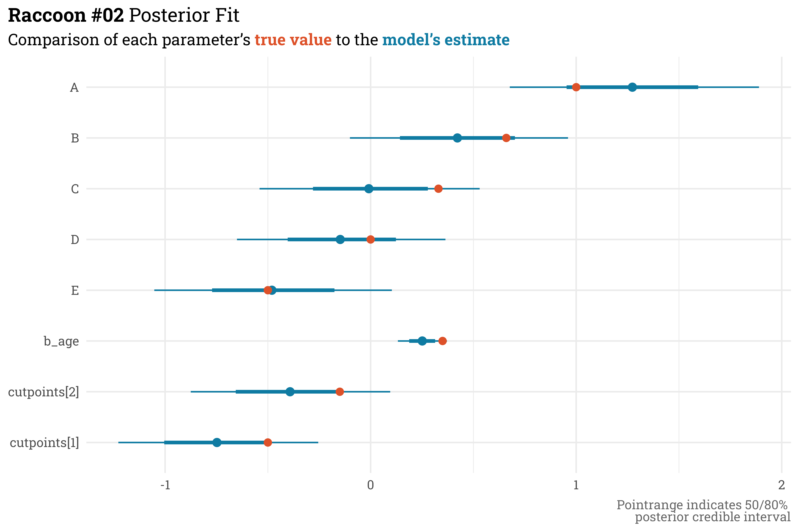
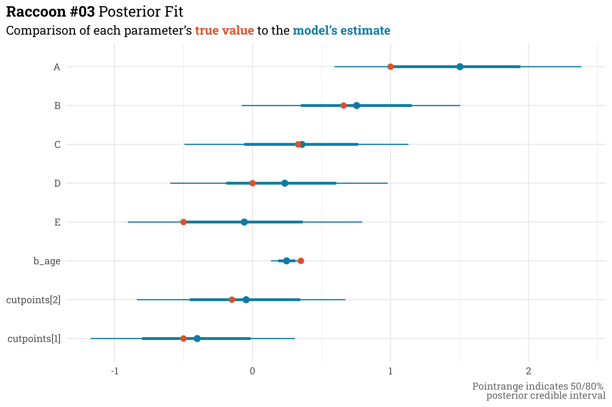
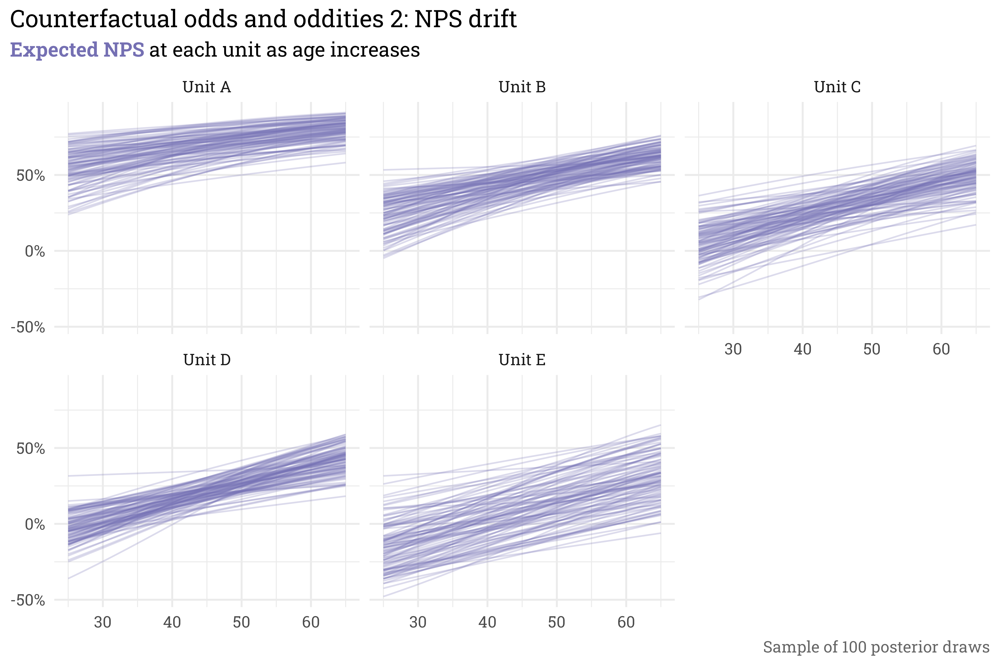

Over the past few years, the hospital system I work for has transitioned from the old metric for measuring patient satisfaction, Likelihood to Recommend (LTR), to a newer metric, Net Promoter Score (NPS). Both metrics ask the same question — how likely are you to recommend this hospital to a friend or relative? — but they are measured very differently. The score for LTR is simply the percentage of patients who respond with the “topbox” option of Very likely on a scale from Very likely to Very unlikely. NPS, on the other hand, is a bit more involved. Patients are categorized based on their response on a 0-10 point scale: responses between 0 and 6 are considered detractors, 7 and 8s are considered passives, while 9 and 10s are considered promoters. The score for NPS is then the percentage of promoters minus the percentage of detractors.
As a metric, NPS is a bit better than the alternative of LTR, since it is somewhat able to take into account the distribution of responses along the 0-10 scale. Consider the following set of responses (and let’s just pretend for sake of example that “promoter” here is equivalent to “topbox”). LTR’s topbox isn’t able to detect a difference in scores since promoters comprise 50% of responses in both sets. NPS, however, can detect a difference, since the second set is rewarded for have fewer detractors than the first set.
With only a few sets of responses to compare, this seems like a trivial improvement — since we have all the data, why don’t we just look at the response distribution for every set? In practice, however, I’m often looking at responses for hundreds of individual hospital units across the system — encoding this extra bit of information into a single number allows for a more nuanced comparison without any costs to the viewer’s cognitive load.
Unfortunately, there’s no free lunch here, and the additional nuance that NPS provides comes at the cost of modeling complexity. Relative modeling binary choices like LTR’s topbox, the ecosystem for modeling the choice between three or more categories is far smaller. Additionally, the order of the categories matters — a promoter response is better than a passive response, which is better than a detractor response. This adds a layer of complexity over unordered categories (e.g., red, blue, or green).
Fortunately, I’m not the first person to run into this problem. I’ve been (slowly) working through Richard McElreath’sStatistical Rethinking, which conveniently covers this topic directly (and comes with the added benefit of utilizing a Bayesian approach via Stan).
Let’s test both my understanding of the ordered categorical data-generating process and my ability to model it by doing a few things:
Define a data-generating process that links a linear model to an ordered categorical outcome.
Manually set model parameters and simulate responses.
See if I can recover those parameters with a model in Stan.
The data generating process
Code
library(tidyverse)library(rethinking)library(riekelib)library(broom.mixed)# I've been having ~issues~ with cmdstan, so switching default to rstanset_ulam_cmdstan(FALSE)
Each patient’s response \(R_i\) can be described as a probability \(p_i\) of selecting from each of the three available categories:
There’s a useful math trick we can use to enforce the order of the categories. Rather than working with the individual probability of each category directly, we can instead define the probabilities in terms of the cumulative probability of each category. For example, in the set below, the probability of selecting “passive” is 10%, but the cumulative probability of selecting a rating of passive or lower is 30%:
The probability of selecting a response less than detractor is 0% and the probability of selecting a response of promoter or lower is 100%, so we can rewrite the individual probabilities in terms of just two cumulative probabilities.
In the logit space, these two cumulative probabilities can be represented by a linear model’s output \(\phi_i\)relative to a set of \(k = 2\) “cutpoints” \(\kappa_k\).
This is all a bit involved but I wouldn’t worry about the details too much. The important takeaway is that we now have a linear model \(\phi\) that maps to a categorical outcome while preserving the order of the categories.
Simulating data
In this case, let’s let \(\phi\) vary by the patient’s age and the hospital unit they visit:
We’ll manually fix the \(\beta_{\text{unit}}\) term for each unit. Additionally, let’s define a sampling weight so that the simulated data ends up with a wide range of response counts.
Here, unit A is likely to have the best scores, while unit E is likely to have the worst. Unit D is likely to have the most returns, while unit E is likely to have the fewest. The randomization/discretization means that the simulated scores won’t match the expected scores exactly, but if we set cutpoints in the logit space, we can work backwards through the data-generating process to see the expected score for each unit.
Code
# set cutpoints in the logit spacecutpoints <-c(-0.5, -0.15)# here's how we expect the units to score for an average aged patientunit_params %>%mutate(q1 = cutpoints[1] - beta,q2 = cutpoints[2] - beta,detractor =expit(q1),passive =expit(q2) -expit(q1),promoter =1-expit(q2)) %>%select(unit, weight, promoter, passive, detractor) %>%mutate(nps = promoter - detractor,across(c(promoter:nps), ~scales::label_percent(accuracy =1)(.x))) %>% knitr::kable()
unit
weight
promoter
passive
detractor
nps
A
2
76%
6%
18%
58%
B
3
69%
7%
24%
45%
C
2
62%
8%
30%
31%
D
4
54%
9%
38%
16%
E
1
41%
9%
50%
-9%
Now let’s simulate patient visits. We’ll have 500 patients return surveys and the number of returns at each unit will be proportional to the weight set earlier.
Now let’s add in each patient’s age. In this case, we won’t include any relationship between age and unit; age will just vary randomly across all units. In reality, this often isn’t the case — you can imagine, for example, that patients visiting a Labor & Delivery unit will tend to be younger than patients visiting a Geriatric unit! Ignoring this reality, in our simulated patient population the ages will vary generally between 25 and 65.
Code
# simulate ages of patients & combine with the unit visitedset.seed(31)patients <-tibble(unit = unit_samples,age =round(rnorm(n_patients, 45, 10)) )
Code
patients %>%slice_head(n =10) %>% knitr::kable()
unit
age
D
46
B
43
B
61
B
55
D
60
D
41
A
49
D
54
E
32
D
38
Finally, we’ll set \(\beta_{\text{age}}\) such that there is a modest positive relationship between age and the probability of a positive response — older patients at any unit will be likelier than younger patients to be a promoter!
With all that wrapped up, we can finally simulate individual responses.
Here’s the distribution of responses for each unit — as expected, unit A has lots of promoters while units D and E have the highest proportion of detractors, and unit D has the most responses while unit E has the fewest.
Code
egypt_blu <- MetBrewer::MetPalettes$Egypt[[1]][2]egypt_red <- MetBrewer::MetPalettes$Egypt[[1]][1]egypt_grn <- MetBrewer::MetPalettes$Egypt[[1]][3]responses %>%mutate(response =fct_relevel(response, c("detractor", "promoter", "passive"))) %>%ggplot(aes(x = age,fill = response)) +geom_histogram(position ="identity",alpha =0.5) +facet_wrap(~unit, scales ="free_y") + MetBrewer::scale_fill_met_d("Egypt") +theme(legend.position ="none") +labs(title = glue::glue("Simulated **{color_text('promoters', egypt_blu)}**, **{color_text('passives', egypt_grn)}**, and **{color_text('detractors', egypt_red)}**"),subtitle ="Distribution of patient responses by age at each unit",x ="Patient age",y =NULL)
Importantly, this differs from the expected outcome at each unit! For smaller sample sizes, each individual patient response has an outsized impact on NPS. Despite this, we should be able to recover the underlying parameters used to simulate the data with a model.
Model
Remember the lengthy data-generating process nonsense from beforehand? As is, that’d be a bit of a mess to implement by hand. Luckily for us, however, McElreath’s {rethinking} package contains a useful function, dordlogit(), that interfaces nicely with Stan’s ordered logistic model. This plunks some of the rote computational steps under the hood and leaves us with the most important bits: the linear model \(\phi\) and the cutpoints \(\kappa\).
Let’s build a series of increasingly complex models using this framework. I’m in a mood for raccoons, so the models are named appropriately:
raccoon_01: a term-less model that just estimates the cutpoints.
raccoon_02: a model with terms for age and unit.
raccoon_03: a model with a term for age and a hierarchical term for unit.
raccoon_04: a model with a term for age and a non-centered hierarchical term for unit.
Before doing any of that, however, we’ll need to prep the data for Stan. Each unit and response category will get assigned a numeric ID and we’ll standardize patient ages across the population.
The first model doesn’t contain any terms and just estimates the cutpoints from the data. In McElreath’s words, this sort of model is little more than a Bayesian histogram of the data. To get started, we just need to provide a prior for the cutpoints \(\kappa_k\).
This is expected! This model doesn’t account for the variation by unit/age and instead lumps all the data together. As mentioned before, this really can be thought of as a Bayesian histogram — while it doesn’t recover the cutpoint parameters, raccoon_01 matches the overall proportion of promoters, passives, and detractors really well.
This model isn’t terribly useful since we could have gotten the same inference from just plotting the data directly, but this serves as a base upon which we can build more complicated and useful models.
Raccoon #02
The second model is where things get a bit more interesting — now we’ll actually include predictors for \(\beta_{\text{unit}}\) and \(\beta_{\text{age}}\).
This model does a pretty good job! Extracting the parameter estimates shows that all of the parameter values that we set manually fall within the 80% posterior credible range estimated by the model.
Code
raccoon_02@stanfit %>%# extract parameter draws & summarise with 50/80% quantiles posterior::as_draws_df() %>%as_tibble() %>%select(-c(lp__:.draw)) %>%pivot_longer(cols =everything(),names_to ="term",values_to ="estimate") %>%mutate(term =if_else(str_sub(term, 1, 2) =="b[", LETTERS[as.integer(str_sub(term, 3, 3))], term)) %>%group_by(term) %>% tidybayes::median_qi(estimate, .width =c(0.5, 0.8)) %>%# append with actual values used to simulate dataleft_join(unit_params, by =c("term"="unit")) %>%rename(true_value = beta) %>%mutate(true_value =case_when(term =="cutpoints[1]"~ cutpoints[1], term =="cutpoints[2]"~ cutpoints[2], term =="b_age"~ beta_age,TRUE~ true_value),term =fct_relevel(term, c(paste0("cutpoints[", 1:2, "]"),"b_age", LETTERS[5:1]))) %>%# plot!ggplot(aes(x = term,y = estimate,ymin = .lower,ymax = .upper)) + ggdist::geom_pointinterval(color = egypt_blu) +geom_point(aes(y = true_value),color = egypt_red,size =2.5) +coord_flip() +labs(title ="**Raccoon #02** Posterior Fit",subtitle = glue::glue("Comparison of each parameter's **{color_text('true value', egypt_red)}** to the **{color_text('model\\'s estimate', egypt_blu)}**"),x =NULL,y =NULL,caption ="Pointrange indicates 50/80% <br>posterior credible interval")

This model, however, could be improved. The model only uses categorical indicators for the unit, which causes two issues. Firstly, we can only make predictions for the few units that are in the dataset — this model would fail if we tried to make a prediction on a hypothetical new unit, unit F. Secondly, information about each unit is contained just to that unit. In this case, unit E has relatively few responses, and therefore can only draw inference from those responses. A hierarchical model, however, can help in both these areas.
Raccoon #03
To add a hierarchical term for the unit-level intercept, \(\beta_{\text{unit}}\), we don’t actually need to make any changes to the linear model, just how \(\beta_{\text{unit}}\) is defined underneath. Rather than estimating each unit intercept directly, this new model will allow them to vary around a group mean, \(\overline{\beta}\) with a standard deviation \(\sigma\).
This new definition means that we no longer set priors for \(\beta_{\text{unit}}\) directly. Instead, our new terms are considered hyper-priors or adaptive priors.
Similar to the previous model, all the true parameter values fall within the model’s 80% credible interval estimates. And, we’re now accounting for the group structure with a hierarchical model! If you look at Unit E, however, it looks like the model has gotten worse — the median parameter estimate here is further away from the true value than in the previous model. This, however, is actually what we want. Because there are so few responses for unit E, the estimates are shrunken towards the group mean. In the previous model, we were a bit too over-indexed on the responses we had — if this were real data, where we don’t inherently know the underlying parameter value, we’d want to be similarly cautious for a unit with few responses.
Code
raccoon_03@stanfit %>%# extract posterior parameters and summarise with 50/80% quantiles posterior::as_draws_df() %>%as_tibble() %>%rename_with(~str_remove(.x, "]")) %>%rename_with(~str_replace(.x, "\\[", "_")) %>%mutate(A = b_1,B = b_2,C = b_3,D = b_4,E = b_5) %>%select(.draw, A, B, C, D, E, starts_with("cut"), b_age) %>%pivot_longer(cols =-.draw,names_to ="term",values_to ="estimate") %>%group_by(term) %>% tidybayes::median_qi(estimate, .width =c(0.5, 0.8)) %>%# append with actual values used to simulate datamutate(term =if_else(str_detect(term, "cutpoint"), paste0(str_replace(term, "_", "\\["), "]"), term)) %>%left_join(unit_params, by =c("term"="unit")) %>%rename(true_value = beta) %>%mutate(true_value =case_when(term =="cutpoints[1]"~ cutpoints[1], term =="cutpoints[2]"~ cutpoints[2], term =="b_age"~ beta_age,TRUE~ true_value),term =fct_relevel(term, c(paste0("cutpoints[", 1:2, "]"),"b_age", LETTERS[5:1]))) %>%# plot!ggplot(aes(x = term,y = estimate,ymin = .lower,ymax = .upper)) + ggdist::geom_pointinterval(color = egypt_blu) +geom_point(aes(y = true_value),color = egypt_red,size =2.5) +coord_flip() +labs(title ="**Raccoon #03** Posterior Fit",subtitle = glue::glue("Comparison of each parameter's **{color_text('true value', egypt_red)}** to the **{color_text('model\\'s estimate', egypt_blu)}**"),x =NULL,y =NULL,caption ="Pointrange indicates 50/80% <br>posterior credible interval")

Despite all this hierarchical goodness, this model’s diagnostics could stand to be improved. Although Stan didn’t throw any errors, each parameter’s effective sample size, n_eff, is low relative to the number of actual samples drawn (in this case, we used the default of 500 samples per chain for a total of 2000 samples) and the convergence statistic, Rhat4, is often a hair or two above the target value of 1.00.
This is not-so-much an issue with the model specification, but with the computation. Stan’s sampler has a bit of difficulty estimating the shape of the posterior for each \(\beta_{\text{unit}}\) because they are dependent on \(\overline{\beta}\) and \(\sigma\), which are estimated separately (this post provides a good visual of the “Devil’s Funnel” — a difficult shape to explore that can arise from this sort of model).
Once again, I am fortunate to not be the first person to encounter this issue, and there is a relatively standard approach that we can take to address. We can respecify the model using a non-centered parameterization for the \(\beta_{\text{unit}}\) terms.
Raccoon #04
A non-centered parameterization is mathematically equivalent to it’s centered counterpart (which is what was used in the previous model), but makes it easier for Stan’s sampler to explore the parameter space. To convert to a non-centered parameterization, we need to respecify the model such that each parameter is sampled directly, rather than being dependent on another parameter.
In our case, we want each unit’s intercept to be offset from the global mean by some amount. We can think of this offset as being \(z\) standard deviations away from the mean. Because the model is additive, we can simply replace the \(\beta_{\text{unit}}\) term in the linear model with the mean \(\overline{\beta}\) and unit offset \(z_{\text{unit}} \ \sigma\).
Again, this is mathematically equivalent to the previous model, but the sampler will now complain less about exploring the parameter space since each term is sampled directly.
We have to do a bit more work to pull out the unit estimates for this model but, as expected, the parameter estimates here are practically equivalent to the previous model’s estimates.
With this new parameterization, however, this inference stands on a bit sturdier ground. While still not near the actual 2000 total samples, the effective sample size of each parameter has greatly improved and the convergence statistic is better across the board.
With this finalized model, we can answer interesting counterfactual questions even if there isn’t data directly in the dataset. For example, what do we expect each unit’s score to be across all ages?
Code
# sequence of standardized ages for each unitcounterfactual_data <-crossing(unit_id =1:5,age_std =seq(-2, 2, length.out =50))# extract a sample of 100 cutpoints from the posterior cutpoints <-extract.samples( raccoon_04,n =100,pars =paste0("cutpoints[", 1:2, "]") )# convert to tibble & add sim indexcutpoints <-tibble(sim =seq(1:100),cutpoint1 = cutpoints$`cutpoints[1]`,cutpoint2 = cutpoints$`cutpoints[2]` )counterfactual_output <-# extract phi & convert to wide tibble format raccoon_04 %>%link(as.list(counterfactual_data),post =extract.samples(., n =100)) %>%t() %>%as_tibble() %>%# add unit/age data; convert to long formatbind_cols(counterfactual_data, .) %>%rowid_to_column() %>%pivot_longer(starts_with("V"),names_to ="sim",values_to ="phi") %>%mutate(sim =as.numeric(str_remove(sim, "V"))) %>%# estimate probabilities for each categoryleft_join(cutpoints) %>%mutate(q1 = cutpoint1 - phi,q2 = cutpoint2 - phi,detractor =expit(q1),passive =expit(q2) -expit(q1),promoter =1-expit(q2)) %>%select(unit_id, age_std, sim, promoter, passive, detractor)counterfactual_output %>%slice_head(n =10) %>%mutate(across(c(promoter:detractor), ~scales::label_percent(accuracy =1)(.x))) %>% knitr::kable()
unit_id
age_std
sim
promoter
passive
detractor
1
-2
1
76%
6%
19%
1
-2
2
78%
5%
17%
1
-2
3
81%
5%
14%
1
-2
4
72%
5%
23%
1
-2
5
80%
4%
15%
1
-2
6
74%
6%
20%
1
-2
7
79%
5%
16%
1
-2
8
64%
8%
28%
1
-2
9
79%
4%
17%
1
-2
10
68%
8%
24%
Here, we’ve taken 100 samples from raccoon_04 for each combination of unit_id and age_std and extracted the probability of selecting promoter, passive, or detractor. If we put together in a plot, we can see what the model expects of each unit across each age and how confident hte model is in that expectation.
There are quite a few items to note from this plot. Firstly, across all age ranges, the early-alphabet units are more likely to have promoter responses than the late-alphabet units. Additionally, there is a relatively small chance of selecting passive at each unit across the ages. As age increases, each unit is expected to receive more favorable scores. Finally, Unit D, which had the most responses, has the tightest posterior intervals while Unit E, which had the fewest, has the widest intervals. All of this is expected, given how the data was simulated. In combination with the true/estimated parameter plot, this serves as a good confirmation that raccoon_04 models the process appropriately.
Since each sample gives the probability of selecting promoter, passive, or detractor, we can simply plug these probabilities into the formula for NPS to get the expected NPS for each unit across the ages.
Code
counterfactual_output %>%# get nps for each posterior samplemutate(nps = promoter - detractor,unit =paste("Unit", LETTERS[unit_id]),age = age_std *10+45) %>%# plot!ggplot(aes(x = age,y = nps,group = sim)) +geom_line(alpha =0.25,color = RColorBrewer::brewer.pal(3, "Dark2")[3]) +facet_wrap(~unit) +scale_y_continuous(labels = scales::label_percent()) +labs(title ="Counterfactual odds and oddities 2: NPS drift",subtitle = glue::glue("**{color_text('Expected NPS', RColorBrewer::brewer.pal(3, 'Dark2')[3])}** at each unit as age increases"),x =NULL,y =NULL,caption ="Sample of 100 posterior draws")

In summary…
In this post, we’ve done the following:
Defined a data-generating process that links NPS to a linear model while preserving the order of the categories.
Manually set the parameters of the linear model and simulated patient responses.
Recovered the parameters with a series of models.
The models that were built increased in both complexity and utility:
raccoon_01 didn’t contain any terms and only estimated the cutpoints \(\kappa_k\) — this effectively gave us a Bayesian histogram of the data.
raccoon_02 added terms for the unit each patient visited and their age. This recovered the parameters we set manually, but didn’t pool any information across units and only allowed us to draw inferences from the units in the dataset.
raccoon_03 converted \(\beta_{\text{unit}}\) to a hierarchical term, which addressed some of the shortcomings of raccoon_02. However, the way the model was written resulted in a difficult parameter space for Stan’s sampler to explore, which gave less-than-desirable diagnostics.
raccoon_04 was a non-centered reparameterization of raccoon_03. The two models were mathematically equivalent, but raccoon_04 was easier to for Stan to sample from, which gave us a larger effective sample size and smaller convergence statistic for each parameter (which are both good things!).
With the fit from raccoon_04, we also were able to look at how the model expected responses to vary with age at each unit. This served as another visual confirmation that the model was doing what we expected based on how the data was simulated. These expected responses also allowed us to plot the expected NPS score at each unit as age varies.
Some (additional) closing thoughts
As mentioned in the opening section, NPS is a difficult metric to model (or, at least, it was prior to picking up McElreath’s book). In the past, I’d used some hack-ish methods to model NPS, such as:
Ignoring passives and detractors by modeling promoters with a binomial.
Aggregating scores at the unit-level, rescaling NPS from [-100, 100] to [0, 1], tossing out any zeroes or ones, then modeling with a beta distribution.
Separately modeling promoters, passives, and detractors with three binomial models.
Each of these is wrong in their own way, but, fundamentally, they all ignore the data-generating process of a patient’s experience influencing an ordered response on a 0-10 scale.
Speaking of a 0-10 scale, this ordinal model extends to any number of categories — we could have have directly modeled the 11 response categories using \(k = 10\) cutpoints. While NPS is more granular (and therefore, in my opinion, better) than LTR/topbox, modeling and evaluating the mean response on the 0-10 scale is even more granular/better than NPS! That being said, however, it’s unlikely that much of my work at the hospital will incorporate that more-granular view. NPS is our chosen metric, so while there are more potential categories, we really only care about the three big buckets of promoter, passive, or detractor. Additionally, from a benchmarking perspective, NPS is more widely available and allows for a quick comparison to other hospital systems that are picking up the metric or even other industries where NPS is the standard satisfaction metric.